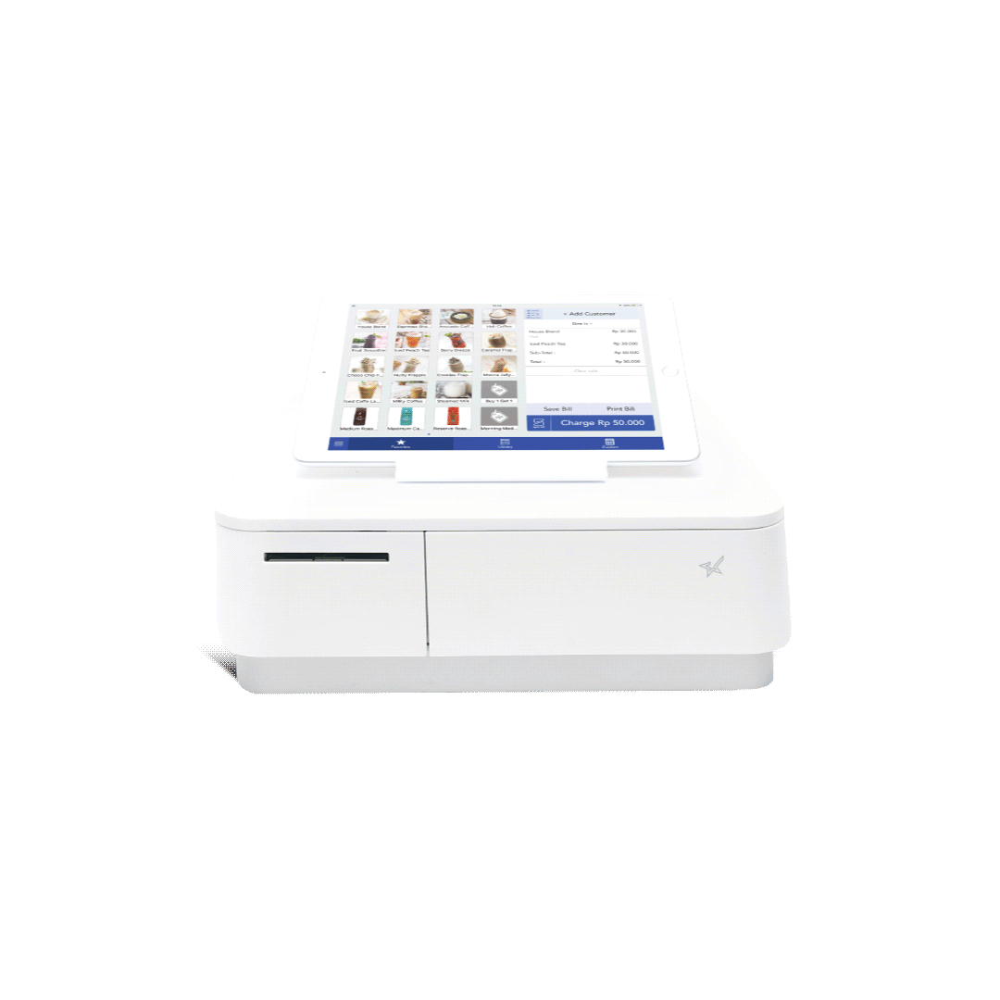

POS System
Coming from nearly 2 decades in the restaurant industry, I have seen, worked with, and programmed dozens of different systems. I wanted to make my own!
Once I started the point of sales system, I began wondering what else I could add to the program for additional functionality. I started with an inventory controller, that linked recipes too stock items, that would deduct product from stock to gather a more accurate GP.
After that I decided to add on an online ordering procedure to add suppliers to selected stock, so that automatic ordering is possible according to par levels and delivery days. I still would like to add invoiceing capabilities to remove paper trails for more efficient account operations.
The final thing I did was add a staffing platform which allows for a range of staff management such as staff bios, clocking in systems, payroll, HR functionality and annual leave.
I still have a lot of work and ideas for this project, and continue to add more functionality when I have spare time to work on it.